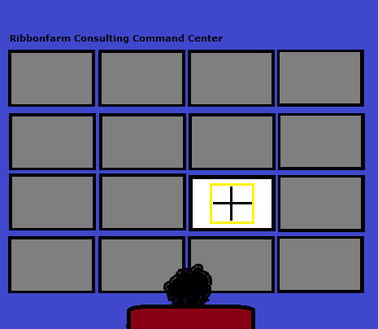
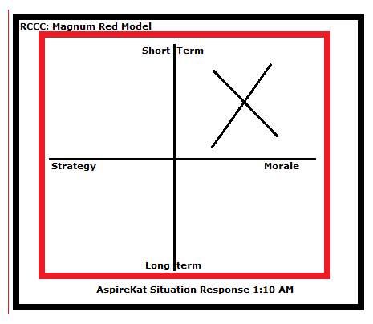

Prelude
I don’t talk about my consulting gigs much in public, since there is surprisingly little overlap between my money-making work and my writing. But many people seem to be very curious about precisely what sort of consulting I do, and how that side of ribbonfarm operates. Unfortunately, it’s hard to explain without talking about actual cases, and I can’t share details of most engagements due to confidentiality constraints. But fortunately, one of my recent clients agreed to let me write up minimally pseudonymized account of a brief gig I did with them a while back. So here goes.
It all began when my phone rang at 1 AM on a Tuesday morning a few months ago. The caller launched right into it the moment I answered.
“Oh thank God! Donna has the ‘flu…I tried calling Guanxi Gao, but I can’t reach him. I left a message but… omigod, we’re going to run out of inventory by Friday, what are we going to do?”
If you aren’t used to the consulting world, this is how most engagements begin: you’re dropped into a panicked conversation in the middle of a crisis that has already been unfolding for sometime.
Luckily, I was not yet in bed, but doing some routine Open Twitter Operations from the Ribbonfarm Consulting Command Center.
I hit the red alert button on my desk, which turned off all but one of the 16 flat-panel displays that line one wall of the darkened main room of the RCCC. The one that stayed on showed a blank 2×2 grid with a flashing lemon-yellow border. The speakers switched from Mongolian throat singing to a steady pip…pip…pip.

Many consultants today use more complicated first-responder protocols, but I am old-fashioned. One clean vertical stroke, one clean horizontal stroke, at most 10 quick labels, and you’ve got your Situation all Awared-Up in the top right. 75% complexity reduction in minutes.
Ten seconds into the call, and I was already set up to Observe, Orient, Decide and Act. This is the sort of agility my clients have come to expect from me.
I interrupted the frantic speaker firmly. You have to interrupt panic calls to do a basic assumptions check. Many gigs get derailed simply because somebody does not take the time to figure out who they are talking to, and about what.
“Who is this? Do you mean Donna Dauntless, VP of Radical and Disruptive Strategery at AspireKat? We haven’t worked together in years.”
“Yes, sorry, I found your name in her emergency contacts list. This is Ben Bean, her admin.”
“And what are you running out of, Ben?”
“Thought Leadership. We only have enough inventory to last through another 24 hours and… omigod omigod, I forgot, we have a projected 312% Employee Disengagement Spike on Thursday because of that Pharell concert in the evening. Omigod, what are we…”
“Now calm down. Where is Donna and what is she doing?”
“I swung by her house. She’s all hopped up on Nyquil and making still-life paintings. I don’t think she’ll be in again this week.”
I sighed and moved a slider under the 2×2 all the way to the right. The border turned to a steady red. There goes my week.
“Okay Ben, now l want you to calm down. I am going to send you a triage 2×2 and you’re going to put that up on all the displays on the executive floor. Can you do that for me? Then I want you to take a nap right there in the reception area. We’re going to have a tough few days. I’ll head over as soon as I can, and we’ll get on top of this.”
There was an audible sigh of relief from Ben.
“Oh thank you. Should I try Guanxi Gao again…?”
“No, never mind that, I know him well. We’ll rope him in later if necessary. Just put up the 2×2 and seal off the executive conference room until I get there.”
You booze you lose, Guanxi. It felt good to steal a gig from the jerk after a long time. Hah!
I stood up, stepped back, and stared at my empty 2×2 grid. After a few minutes, I decided to go with one of my standard first response 2×2 templates, the one I call Magnum Red: Morale vs. Strategy, Short-Term vs. Long-Term.
With a quick flick of my wrist, I spun it around to put the Morale/Short-Term in the top right, added a large X there, changed the caption to AspireKat Situation Response 1:10 AM, and hit Send.

That should get them breathing again. I leaned back and did a quick 30-second Refactoring Meditation.™
I was Oriented and ready for action.
If you have never seen a live Consultant First Response unfold, you probably don’t know just how ugly things can look before people like me step in to clean up the mess created by incompetent leadering.
In retrospect though, I should have chartered a plane and flown in, as I sometimes do on high-value gigs, instead of riding my bicycle. That might shaved two hours off my trip, and made all the difference, as you will see.
Anyhow, things were not looking pretty when I stepped out of the elevator on the executive floor of the AspireKat headquarters at 6:30 AM.
The entire senior leadership team was gathered in front of the reception area monitor on the left, staring at my Magnum Red 2×2 and nodding to themselves occasionally. Good. Several were nervously fingering their Apple iRosaries. They were breathing heavily and sweating, but mostly seemed to have regained their composure.
Nobody was lying down on the half-dozen or so mattresses that somebody — probably Ben — had thoughtfully laid out along the far wall, across from the elevator.
That much I expected.
What I did not expect was Guanxi Gao. By the glass wall on the right, next to the large potted plant, a red-eyed, unshaven Gao was talking earnestly to the CEO, Saul Serene. Saul is balding and about 60. We had never interacted in person, and he’d grown a goatee since the last time I’d seen him, when I was working with Donna Dauntless. He was dressed in a calming black turtleneck, slacks, and rimless glasses.
He was looking through the glass wall at the dawn skyline view with noble, stoic dignity. Not entirely Dead White Male. At least 1/128 Native American, I guessed.
Guanxi, in a cheap, wrinkled suit, was swaying slightly, holding a large travel mug of his coffee in one trembling hand. He was trying to get Saul to look at a piece of paper in his other hand. I couldn’t make it out, but it looked like a list of names.
Goddamit. I thought I had that handled. You do not expect Guanxi Gao to be up and sober enough to operate this early. Oh well, I could handle him sober. He is mainly a threat when you’re shadow-boxing for a gig after the fourth drink. After the fourth drink, who-you-know people win 90% of the time against what-you-smoke people like me. I don’t smoke of course. I’m one of those rare natural imagineers.
There was one more surprise for me as I finished my scan of the reception area. In the waiting area on the right, on one of the comfortable armchairs, sat young Arnie Anscombe, tapping away rapidly at a laptop. Charts and tables were flying around on his screen. He seemed to be using a lot of keyboard shortcuts, always a Dark Magic danger sign.
Now this I had not expected at all. This had just turned into a three-way battle. There was a what-you-know player in the ring.
Worse, like me, he was impeccably turned out in doer-stubble and a nerd-normcore sweater. Except that he could actually wrangle data, while I was, truth be told, faking it and exploiting Standard Assumption About South Indians #17.
I’d have to play the Indian card differently now to stand out, with him around. I ran a hand through my hair to make it look more curly, and mentally reset my accent to 23% more Indian. Enough to come across as International Management Bagman of Mystery, but not enough to be mistaken for lowlife outsourcing broker.
I had run into Anscombe before. He was at least 15 years younger than either Guanxi or me, and hadn’t yet found his niche. But the last time I’d run into him, in a dirty skirmish in the solar cell industry, I had discovered how dangerous he could be.
He could crunch entire Big Data stores in the time it took me to rotate a 2×2. Real-Time Falsification ran through his damn digital-native-born veins.
Technological leverage. That was the key to his value over aging Gen-Xers like me. Guanxi, sober or drunk, I could mostly handle. Anscombe, not as easy. He represents a new breed. They form a sort of ISIS-like threat in the indie-consulting world.
But you know what was ironic? Anscombe stole that solar cell gig from me not with a data-driven insight, but with a 2×2 based on dummy data! One whose axes did not even make sense. This was not going to be easy. I should have had Ben lock down the IT system too. Oh well.
I looked around for Ben. Clearly, that would be the anxious looking young man standing by the locked executive conference room door with yellow caution tape across it. His gaze was darting fretfully back and forth between the main huddle and Guanxi and Saul. He seemed to be ignoring Anscombe, another bad sign.
I cleared my throat, preparing to announce myself. But before I could, Anscombe looked up from his laptop.
“I’m in.” He announced.
The reception area monitor flickered, and then switched from my Magnum Red 2×2 to a split display with two graphs. One showing real-time employee engagement, the other showing real-time customer sentiment mined from Twitter. There were also two scrolling feed columns, showing Twitter mentions and a Slack #general channel.
Double damn. Derailed by Dynamic Data yet again.
This called for decisive action.
“Alright everybody, let’s get going. Ben, you can open that door now. And hold it open please! Nice little headstart you’ve gotten us there Anscombe, thank you. Great to have one of you young analytics gophers on board! Should help add a little extra kick here!”
To my relief, Magnum Red was still showing on the conference room display.
I managed to maneuver Saul to the head of the table and position myself by the display at the other end of the long room, with the stylus prominently visible in my right hand.
The rest of the executives seated themselves around the conference table. Guanxi and Anscombe were left standing by the back wall. Fortunately, we were exactly three chairs short. Sometimes the universe works for you.
“Thank you Ben. Saul. Gentlemen. Ladies.”
I looked around the room, then stepped to the side with my stylus raised and looked expectantly at Saul.
“You want to get us going, Saul?”
See, this is the critical moment in consulting. Executives of course have no idea what they are doing, ever, so the economy really runs thanks to consultants like me. And if I am being fair, professional alcoholics like Guanxi and analytics-gophers like Anscombe.
Without us, the world would crash and burn within minutes. Trust me. I’m telling the truth. Not like some of those other consultants out there who won’t tell it like it is.
But you have to let executives think they are in charge. With the right cues, they do the right thing.
Saul, however, did not do the right thing. He hesitated, looked uneasily at Ben (who was sitting in the chair closest to me, looking relieved) and then pulled the one CEO move that strategy consultants have nightmares about.
He swiveled his chair away from me, triggering a cascade of swiveling.
Double Deadly Damn it to hell.
And as I had immediately dreaded, he swiveled, not towards Guanxi, with whom he’d been chatting, but towards Anscombe.
“That graph…”
Goddamit. I had misread Saul. His security blanket was not models, not relationships, but numbers.
Fortunately for me, Anscombe’s inexperience betrayed him. Incredibly enough, he looked away from Saul and turned to look at me. That, my friends, is the power of being The Guy with Control of the Whiteboard. Even if you’ve put the wrong first response up on it.
I bestowed a paternalistic smile upon him. Candy from a baby. I turned to rapidly work on the board.
I erased the big X in the top right quadrant of the Magnum Red, wrote BACKSTOP in large red letters and double-underlined it. Beneath it, I put, in parenthesis, (employee engagement?).
In the bottom left quadrant, I wrote: customer sentiment — Anscombe?
I made sure the lettering in that quadrant just a little bit smaller and harder to read.
The room had gone quiet while I was writing, and everybody had swiveled back to face me. I stepped back to admire my handiwork, then turned around and smiled at Saul.
“So…shall we talk priorities?”
He opened his mouth, then closed it again uncertainly.
That was the opening I needed to take control. I jerked my head upwards and to the right, and put on the expression known in the industry as Real Time Insight, Executive Suite Edition.
Back when I was a rookie, I used to get things mixed up. Sometimes, I would turn sharply and take a few decisive steps across the room, which is what the industry calls Real Time Insight, On-Stage Edition.
Sometimes it doesn’t matter if the room is large enough, but in a small room, even a few decisive steps can have you stopping abruptly and awkwardly at a wall, which just makes you look like an idiot. So a professional performance really requires you to have the entire contents of the Consultant’s Complete Body Language Reference (2nd Edition) in muscle memory.
I now had their complete attention. Whether they realized it or not, they had just subliminally reacted to the arrival of an Insight in the room, via yours truly.
I held up my hand dramatically.
“Wait a minute… I think I have an idea about how to structure this!”
I paused, then very deliberately turned my back on the room to face the display. Always Be Channeling attention. ABCa.
I pulled up a clean sheet in the whiteboard app, and drew a large green circle in the center. Then I paused, and drew a larger dotted triangle around the circle, in blue.
I labeled the circle Executive Team and added Saul at the center. Then I added Rao, Guanxi, Anscombe at the three vertices of the triangle, being careful to put Rao at the left vertex and Guanxi at the top vertex. In the past, I would have labeled the vertices Ideas, People, Data as well, but I’ve learned that you never want to put yourself in a boxed-in structure, no matter how attractive and conceptually elegant it is.
You only do that to other people. Otherwise people start classifying themselves into being for or against you. You want to leave people free to do pattern-spotting and self-classifying to their heart’s content, but not call out any patterns or classifications that make you more legible.
The key with effective whiteboard work, especially when you’re using FUD-wrangling constructs chosen because they are unfamiliar to the audience, is to recognize that even if people think the element near the top is the most important, they behave as though the leftmost one is most important.
Because they read left to right. I once lost a major gig in Dubai because I hadn’t yet figured this out. The Sheikh was very nice about it, and gave me an oil well as a consolation prize, but it stung.
I stepped back with a satisfied look, smiled benevolently around the room, and looked at Saul.
“You’re the backstop here of course Saul, and the buck stops with you, but I suspect it would be useful to have your team first sign up for whatever pieces they can turn around quickly.”
See, the key to working with the nominal Top Dog in a situation is to craft a Situational Control Structure™ or SCS,™ within which they can feel powerful, like they have both authority and authoritah, and appear to have accountability and humility as well, but not actually do anything.
A good leader, when asked, “Do you want to be perceived as a Strong Big Man Leader or a Humble Servant Leader” will always reply “both,” and mean “neither.”
If you can keep the Top Dog happy, everybody else falls in line. At the same time, you do not want to lose the subtext that keeps you really in charge, but not accountable to anyone. But this is much easier than you might think.
The key is to deploy a calibrated amount of Buzzword-Bingo Lingo™ to both direct attention to the right places and trigger conditioned responses. Too much, and people check out. Too little, and you have chaos.
The maneuver I used, reinforcing the single world Backstop across two whiteboard panels, and connecting it to a Heroic but All-Sacrificing Lonely Leader stance role for Saul to occupy, is what is just one of many used in the business. The overall maneuvering of people into situational roles and events into plotlines, the core of consulting tradecraft, is called massaging the narrative.
The purpose of this is to ensure that everybody except you loses the plot, but feels like they’ve actually grasped it better. The first few bits of massaging you do should be designed to create the right level of urgency. Backstop is a word that suggests a situation that is somewhere between an unmanaged crisis and a tough, but in-control war-room. It is a word that wakes people up and makes them feel all virtuously focused, but doesn’t incite any actual precipitate action.
This is called Determinacy Illusion Engineering™, or DIE.™ Together, SCSing and DIEing constitute 60% of all consulting work.
I tilted my head at Saul and got the nod of assent I was looking for.
“Let’s go back to the situation matrix. How about we start with…?”
I looked at the woman to the right of Saul.
“Lopez. Isabella Lopez. EVP of Operations.”
We need to stop and unpack what I did there.
See, you should always begin Structured Conversation Operations™ or SCO™ (another 30% of strategy consulting) with a gesture of transparent, but not overt, inclusion signaling.
If you start the SCOing in a logical place, such as with the person who knows the most about what is going on, people might start actually thinking so much they no longer need you.
But if you start with a gesture like this, people turn on a socially appropriate ritual mind, which involves a certain useful level of thought suspension, compliance and self-censorship. You can stop entire lines of second-guessing and unfriendly counter-proposals dead in their tracks by creating the right ritual context. Of course, you can’t go nuts with this stuff and expect it to work. Asking the token black intern in the room taking notes to get the ball rolling would be way too transparent a move.
If you know what you are doing, you can deweaponize Social Justice Warrior techniques and turn them into useful civilian management tools. And identity performance is just one of the many useful and powerful cultural forces you can harness for use in modern management.
But it’s a mistake to trigger ritual cultural behaviors openly, with ceremonial cues like “let’s make sure everybody feels heard here.” You want to cue socially programmed robotic behavior without people realizing they’re behaving with 34% more ritual circumspection than they intended to. Here, I started with the person on Saul’s right, but I could have gone left, started at the other end of the table, or used any number of other defensible starting points, and people would have explained it to themselves as a logical choice using any creative rationalization except race-and-gender.
“Great, Isabella. Let’s start with you, and since us folks on the triangle looking in from the outside haven’t met all of you, perhaps you could all introduce yourselves too? What we need is for you to estimate how much Thought Leadership you can generate quickly…Ben, how much do we need to get us through the next week? I assume Donna will be back by Friday?”
Ben looked up, startled. He had been anxiously looking at a calendar on his phone.
“Err… I don’t know. We have a dozen slides to get us through the rest of today and tomorrow, which should just be enough… but Thursday, with the projected disengagement spike… I really don’t know.”
“Give us a guesstimate. You are going to have to quarterback this, and you’ve done it before, so think.”
See, here is a subtlety that many rookie indie consultants miss when it comes to SCOing. You have to figure out who is going to be conscripted to take point on a situation, and it usually can’t be one of the executives. Because if there’s one skill people invariably pick up on their way to the Executive Suite, it is the alertness to never take point on a situation that they do not have the freedom to define.
Even the greenest of new VPs gets this instinctively, even if they cannot articulate it. They will resist Responsibility without Autonomy with all their might.
So the key is to tag someone who does not recognize the age-old anti-pattern of asymmetric tactical contracting (a bastardized version of what consultants intent on using Big-German-Word-FUD call Auftragstaktik): You decide how to lead, I’ll decide what sort of control structure you’ll be using.
You also have to make sure the person you maneuver into position has the right mix of haplessness, suggestibility and susceptibility to flattery. If you operate in the United States, the phrase you’re going to have to quarterback this does the trick. Even with women. Especially with Leaning-In Women. Picks out the right person every time. The metaphor is not a useless flourish: it is just as much a part of the Situational Control Structure™ as the role-casting you do with executives.
Clueless consultants use explicit, abstract and functional role and responsibility definitions. They even think it’s their job to make these up. The worst ones even go so far as to draw block diagrams to illustrate theirideas.
No, no and NO.
That’s HR-sideshow stuff somewhere in the middle of the staff hierarchy. The lowest kind of consulting.
The strategy consultant’s job is to prime senior executives and their staff with just a hint or two, so they end up using Situational Control Structures™ that benefit you, while imagining they thought of it themselves. Not only does it work better, it buys you more plausible deniability if things don’t work out, since you can’t be blamed for a documented process suggestion.
That does not mean you don’t have meta-control over the process of getting an SCS™ off the ground through the Structured Conversation Operations™ that you’re using to drive things. Quarterback gets people thinking along very different lines than priming words like say, Captain or Consigliere or Steward.
In India or the UK, you’re going to open the batting will work. In continental Europe or China, this sort of hard-charging Anglo-culture maneuvering does not work, so you need other moves that are much more collectivist in spirit and more we and us pronouns liberally thrown around. Soccer metaphors help, but I am not very good at those. But whatever the local culture, there are always appropriate metaphors and triggers you can use to massage the narrative.
One way or the other, you need to find a Ben and get them out in front of the crisis, ready to be The Face of the Situation.
Ben looked uncertain for a second. I smiled encouragingly. He sat up straighter in his chair, leaned forward with his fingers steepled and spoke confidently for the first time.
“I’d say we need about 34 Thought Leadership slides by Thursday morning. The disengagement spike is going to be pretty big, so we might even want to consolidate them into a Vision Deck to cascade through the whole organization before lunch. And possibly a three-point communication email from Saul. Donna always has Saul do a three-point communication email during disengagement spikes.”
Perfect.
I turned to look at Isabella. She opened her mouth to speak, and at that point, all hell broke loose.
First there was the din of a helicopter coming in really, really close.
Next, there was a loud sound of breaking glass.
Before I could say a word, everybody began rushing out.
The entire glass wall of the reception area, with the panoramic view, had been shattered.
Men in gray suits and combat helmets, carrying genuine leather messenger bags, were rappelling down a rope dangling just outside the broken windows, and swinging into the reception area.
Three had already taken off their helmets and set up their laptops in the waiting area. A fourth, an immensely tall man carrying a large Viking battle-axe, was barking orders at the men streaming in, directing them to different setup locations.
We all stood, mouths agape, as the last of the dozen or so men swung in. The rope vanished upwards and out of sight. The helicopter dropped down into view for a moment. The pilot gave a thumbs up to the tall leader of the suits and stylishly banked the helicopter away, with thoroughly unnecessary drama.
The din subsidized. The immensely tall leader put aside his battle-axe and stepped forward towards Saul, with a reassuring smile and his hand extended. His suit looked just a little bit classier than the others’ suits, and he was not carrying a messenger bag. Just a large phablet in his left hand. Could he be…
“Hi Saul, Ulysses Alexander Khan. McKinsey Engagement Manager. You can call me Khan. Let’s head back in there and get started.”
KHAN! I had heard of the legendary McKinsey EM before, but had never met him. It was rumored that he had undergone gene therapy that allowed him to structure conversations just by staring down people in a particular order, without saying a word. I didn’t believe these rumors, but I had to admit: the man was impressive.
Before I could speak, he had steered Saul back into the conference room, with a reassuring hand on his back. The rest of the team followed them immediately, glancing back over their shoulder at the now buzzing reception area, their eyes wide with wonder.
Guanxi, Anscombe and I looked at each other. Then we turned to look at the McKinsey team, who were ignoring us.
Anscombe said, “What the…? Why the hell are they crashing such a small gig? This isn’t even going to break 100k in billables…”
Guanxi looked uncertainly at the busy team, who had now occupied the whole reception area.
“Should we just join…?” he began uncertainly.
I cut him off. “Of course not. We’re not hanging with the flunkeys. We’re going back in there.”
Saul looked relieved when we walked in. Khan was looking at the screen with amusement, twirling the stylus in his hand, waiting for the room to settle down. He smiled sunnily at us and gestured us towards the back of the room.
“You’ll have to stand for the moment, I’m afraid. I’ll have one of my people bring in more chairs in a bit.”
Bastard.
He turned back to the display.
“A 2×2, how charming!” He swiped to bring up my triangle-and-circle graphic.
“Wow, a Type 9c circle-triangle Platonic! Haven’t seen one of those since consulting bootcamp back in ’88. Very creative. I am constantly impressed by how well the little rag-tag indie outfits manage to get by with so little. We professionals could learn a thing or two from them.”
He turned around to look at Saul.
“Very nice work under the circumstances. The VP of Radical and Disruptive Strategery getting the flu in the middle of a Thought Leadership crisis is nothing to sneeze at. I suppose it’s one of those gentlemen at the back who has been helping you frame things so far?”
Saul looked uncertainly at Ben, who looked uncertainly at me.
“Dr. Rao here is helping us structure the conver…”
Jeez, thanks Ben. Way to just HAND the guy the Ignore-the-Impractical-PhD card.
“Not anymore, he’s not,” Khan interrupted, his tone was friendly, but with an edge of hard blue steel showing through. “McKinsey is in the house. We’ll take it from…”
Now, I can generally hold my own even when open hostilities commence, but I am not very quick on my feet right after a shock-and-awe entrance by one of the Big Three. If you’ve never experienced one of these, being on the receiving end is a little bit like being suddenly drunk.
Close up, helicopters are really loud. They know this, which is why, back in the 90s, the Big 3, along with most of the larger boutique firms, switched to rappelling down from helicopters instead of parachuting in from planes.
Rappelling also has the advantage of being more accurate. Back in the day, the Big 3 used to lose a lot of deals simply because half the Engagement Team would sometimes lose control of their parachutes and land miles away from the client site. They’d just give up and head to the nearest restaurant offering a three-martini power-lunch (a thing in those days). The big firms found themselves losing more and more engagements to jumped-up IT consulting outfits, while accumulating power-lunch expenses that could not be billed to any client.
Now they have it down to a science. They know that in the first few minutes of shock and awe, even the most battle-hardened CEO can be counted on to go along with the laziest of Big Three framings.
Fortunately, it was Guanxi’s moment to shine. He stepped forward, staggering only slightly.
“I think,” he said with the raspy and over-careful enunciation of the still-hungover, “Isabella was just about to give Saul her situation assessment when you guys joined us.”
Khan looked nonplussed. He had overplayed his hand. Guanxi had bought me just enough time.
I lightly stepped around to where Saul could see me.
“If you agree Saul, since we now have the resources of a full-scale McKinsey tactical team here, we should perhaps have Mr. Khan explain their operational set up out there to Isabella first, and have her decide how they can be integrated into her operations?”
Saul nodded immediately. I had finally begun to anticipate his responses correctly. Saul was fundamentally a chain-of-command guy.
“And it might be useful to have Mr. Anscombe here join them, since he’s already got a handle on the relevant disengagement spike data?”
I figured I might as well use the opportunity to test the youngling’s alignment instincts. If he managed to work himself out of the safe but low-leverage box I had him parked in for now, and choose sides wisely, interesting things could probably happen. And I needed wildcards in the picture now.
When faced with overwhelming force, start building unpredictability into the situation at every opportunity. Momentum is your enemy. FUD hurts everybody involved, but it hurts the biggest, highest-momentum guy the most.
It was also important to keep Anscombe safely in play, since it was already clear that Saul needed a Data security blanket.
See, in a FUD-and-counter-FUD situation, many people think the key is knowing who needs what kind of security blanket.
That’s a key, but not the key. The key is knowing who can provide any given kind of security blanket that might be needed, even if it isn’t you, and getting your candidates front and center at the right times. Saul was comfortable enough with People equations to stay on top of Guanxi by himself. He was a question mark on Ideas.
But he clearly needed to know where he was with Data, and needed help doing so.
He had been been looking baffled for several minutes. Now he switched to looking dazzled.
“Great idea. Brilliant!” he said to me, getting up decisively. “Lead the way Bella.”
Khan looked at me and glowered. But he had lost the plot for the moment and could do nothing, and he knew it. I had even managed to stick the tactical label on him, and he hadn’t been able to react quickly enough to prevent that. That had to sting, especially for a McKinsey vet. Shock and Awe aside, it was Little Guys 1, Big 3: zero. But I knew that wouldn’t last.
We filed out again, with Khan leading the way and Isabella and Anscombe right behind him.
Guanxi and I brought up the rear, straggling a bit.
He leaned over to me and whispered, “We should get a drink next time we’re in Hong Kong at the same time.”
Khan’s team of suits was now lined up in a row, at attention, saluting stiffly. Their helmets were back on.
“ASSOCIATES, Report!” Khan barked.
The suit on the far left of the row goose-stepped forward.
“Sir, Spreadsheet Team is Go, Sir!” he yelled.
The rest began stepping forward in turn.
“Sir, Primary Dazzler Systems are Go, Sir!”
“Sir, Secondary Baffler Systems are Go, Sir!”
Anscombe was staring at the equipment bank in the waiting area with his mouth open. I could see why he was impressed. They’d brought in a full-scale 128-core Welch-Jobs Dazzling Scenario Generator and a state-of-the-art Mitsubishi Baffler 3000, capable of piping customized FUD into 3000 screens at once.
As Anscombe had observed, this made no sense. It was overkill.
With this setup, they’d blow through a standard 72-hour Thought Leadership Crisis consulting budget in about 12 minutes. Clearly they had smelled something bigger.
Khan and Isabella were now by a bank of screens with several spreadsheets open, and he was BigThreeSplaining something to her. This was going to take a while.
I sidled up to Saul.
I whispered, “Looks like Isabella is on top of operational preparedness, and looks like Khan and his people are tactically set up to execute on any creative ideas we might throw at them.”
Saul nodded. Twice labeled. Khan was safely in the tactical box for the moment.
He said, “How about we get back in there and work the strategery in parallel? Get ahead of this thing instead of reacting to it?”
BAM!
The first sign Saul was not entirely averse to Ideas. And he’d gone there entirely by himself, without me having to work him there.
Things were looking up again.
See, in strategy consulting, the greater the quantity of resources you deploy into an engagement, the lower down the hierarchy you go. Pyramids are bottom-heavy, so resources are not necessarily an advantage, since they need a certain amount of pyramidal breadth to operate within. They get you in quicker, but they weigh you down later.
The guy who gets control of narrative is often the guy operating with just a whiteboard, right at the top. No Big Data. No spreadsheets. No PowerPoint.
Just a man and his whiteboard, armed with nothing more than a germ of a 2×2 in his head. Consulting in all its elemental rawness.
Saul stepped back from the group and headed back towards the conference room.
I gestured to Guanxi to follow. We were on the same side now and we both knew it. If he passed the test, I’d reel Anscombe back to our side too, after he was done being Tech Dazzled.
Us little guys were down for the count, but not out yet.
I shut the door of the conference room gently behind us. We could still hear Khan and Isabella out in the reception area, but their voices were now muted. Saul seemed to be in some sort of philosophical reverie as he made his way to his chair. Guanxi looked at me with narrowed eyes and nodded significantly. I narrowed my eyes as well, and nodded significantly in turn. A look of mutual understanding passed between us.
It’s a consultant thing. We call it the Significant Look Protocol.
Scientists have tried to figure out precisely what information is exchanged and during these narrowed-eye-nod exchanges, and have come up with nothing. What is known though, is that about 1% of the time, a Significant Look results in a subtle, but unmistakable situational change known as Going Meta. Nobody knows what that is either, but it is a documented fact that when things Go Meta, cartels form and billables increase by a factor of 10.
This means a great many Significant Looks are exchanged at management conferences, but most lead to nothing. Some lead to sexual harrassment lawsuits.
This was one of those 1% of times. We had just gone meta. We both knew it, and knew the other did too.
You need to burn stronger coffee to fly at meta altitudes.
Guanxi went over to the coffee machine and began making coffee. It was now 7:15 AM. About 6.25 billable hours into my already-long day.
Saul settled into his chair, leaned back, and studied his steepled fingertips with quiet gravitas for a moment. Then he looked up and pondered the 2×2 on the screen with a look of sharp appraisal in his narrowed gray eyes.
He clearly had no idea what was going on.
So my first meta problem was this: how could I stow Saul safely away from Khan while Guanxi and I tried to figure out why McKinsey had rappelled into AspireKat, chasing a measly $100k gig? Optimistically, Guanxi and I had about 15 minutes before Khan realized we were gone, and manufactured an excuse to butt back in.
We had 15 minutes to create leverage.
I sat down next to Saul and leaned back, mirroring his posture, and stared gravely at the screen.
“It is the job of a leader to define and interpret meaningful external reality for others,” I quoted, with an air of studied reverence.
“A. G. Lafley,” said Saul, and turned and smiled at me.
“From What Only the CEO Can Do, right?” I said, and smiled back. “One of my favorites.”
I gave him a Significant Look, but added just a dash of helplessness and a pinch of admiration. The aim of this maneuver is not to create mutual understanding or Go Meta, but to create a certain distance and trigger a state of mind only leaders are capable of: Courageous Solitude.
A brief flicker of loneliness appeared on Saul’s face, and was immediately replaced by a look of Aurelian courage and resolve. He returned to staring at his steepled fingers.
I shot a look at Guanxi. He brought over the three coffee mugs, put them on the table, and sat down next to me.
“Saul, I am sensing you need a moment alone to gather your thoughts,” I said.
He smiled gravely.
“We won’t be offended if you feel like stepping out on the balcony to listen to your heart.”
“You know what? I think I will.” He stood up, picked up his coffee mug and smiled at me. “You might be a little too authentic for this game, young man.”
Guanxi and I stood up as well. He stepped out onto the balcony to look at Meaningful External Reality. Bingo.
The listen-to-your-heart bit had been a calculated risk. Your off-the-shelf CEOs only come in a few varieties with well-documented vulnerabilities. I hadn’t dealt with an Aurelian in a while — the turtleneck and goatee had had me confused for a bit and I’d been playing him like an Auteur, but he was clearly an Aurelian through and through. And the Aurelian’s main vulnerability is that they are suckers for a Glimpse of Emotional Authenticity.
The moment the balcony door shut behind him, I swung around immediately towards Guanxi and got up.
“Get on the phone, now! We have fifteen minutes tops,” I hissed through clenched teeth.
Guanxi nodded, executed a practiced speed-dial stab at his phone, retreated to a corner, and began whispering urgently in Cantonese.
I sat down again, in the chair Saul had just vacated. I leaned back, steepled my fingers, and looked at my 2×2 with quiet gravitas and sharp appraisal.
It took Guanxi exactly three minutes to turn up something. Bless him.
The stream of Cantonese stopped. Guanxi had put away his phone. I stood up and walked over to him.
“Sounds like there’s an acquisition bid in the works.”
Finally. “Who?”
“KlongleWorks.”
The ten-billion-market-cap-and-counting Unicorn!
“Why?”
Guanxi shrugged.
I frowned. It made no sense. What would the fastest growing Silicon Valley startup want with a mediocre, mid-size, Connecticut-based maker of really bad insurance software?
“Do you know anything about them? I’ve never worked with them.”
“Me neither. They’re pretty secretive, their people are too scared to talk, and they don’t hire consultants so…”
“…nobody you or I know is likely to know anything either,” I finished for him.
Then it hit us both at the same time:
“Khan doesn’t know anything either…” I exclaimed.
“…he’s just trying to Trojan Horse his way into KlongleWorks!” Guanxi finished.
We stared at each other. This is the moment consultants live for. This wasn’t a routine Thought Leadership MacGuffin gig. There was an actual known-unknown in play. If we could figure out what it was before Khan, we would have the leverage we needed.
See, there is a particular kind of idiot who goes around proclaiming that consultants just steal your watch and tell you the time, as though that were a deep revelation about how we evil consultants scam Good, Honest Corporations That Are Merely Trying to Create Wealth.
This interpretation is from not-even-wrong land.
The idea of bringing in an outsider to tell you what you already know is actually an idea that was invented by the first totally evil clients of strategy consulting, at a secret conference of neoliberal CEOs, chaired by Jack Welch, in an underground bunker in North Dakota in June of 1982. Reagan was due to attend too, and they even had a futon set up for him, but he didn’t show.
The future of consulting was created at t this conference. Many consultants of the period died in the crocodile moat around the bunker trying to break in, but none made it in. All we know about what transpired at that fateful event is this: the CEOs concluded that since they suddenly had about 1000x more agency than just a few years ago, they would need a scalable way to manufacture plausible deniability for the future. They would need paper trails by the wholesale ton. They would need a cheap source of unbiased and independent third-party validation for decisions they would have had already taken.
Yes, Going Meta is mainly about quasi-atemporal subjunctive mood tense constructions.
Overnight, a sleepy, backwater boutique industry was transformed into a behemoth of a services business built around a game entirely designed by CEOs. Worse, they thought of a way to make it sound like our idea and to our benefit. They called it the stealing your watch to tell you the time business and acted like they were the victims of it. It was a master stroke.
In the consulting world, this service offering of telling clients what they already know is what is described in the service brochures as decision support.
Even though this can be a high-margin business to be in when switching costs are high, consultants don’t like it for one simple reason: if everything you can offer is based on what the client already knows, and knows they know, you are replaceable. This means you have to rapidly sink your claws deep into the client and figure out some other way to protect your position and margins. Otherwise, it’s only a matter of time before some other 2×2-and-Excel hackshop steps in with a lower bid, triggering a race to the bottom that ends with analyst reports.
The key to turning the tables is to be the first to pounce on any known unknown that appears in the local picture. Not macroeconomy, not sector economy, but local.
“If we can figure out why KlongleWorks is interested before Khan does…”
“We need to buy time…”
“We need to slow Khan down…”
“Isabella won’t hold much longer, we need someone running interference.”
For the second time in five minutes, we both had the same thought at the same time.
“Bainies!” we shouted together.
At that moment, the balcony door opened and Saul Marcus Aurelius Serene stepped back in with the glow of a CEO who has just had an Executive Insight.
“What was that shout?” he inquired, sitting down.
And before either of us could respond, the door to the reception area flew open, and Khan burst through, followed by a harried-looking Isabella.
“Aha!” he said, triumphantly.
I said, “Come on in Khan, we were getting some coffee. Saul was just about to kick off the strategy session.”
Guanxi said, “I just need to make a quick call” and stepped out into the balcony.
The room was only about half full now. Half the executives seemed to have stayed back to work with Khan’s men.
Ben and Anscombe were back in the room though.
Moment of truth for Anscombe. I caught his eye, gave him a Significant Look and jerked my head almost imperceptibly towards the balcony door.
A look of mutual understanding did not pass between us, and we clearly did not Go Meta. He did, however, get up with a bewildered look and head for the balcony door.
Khan had noticed, and tried to nod imperceptibly to one of his own men to follow, but I managed to interrupt the Significant Look by suddenly exclaiming, “Of course! The Value Chain!” (a term guaranteed to make any McKinsey person look your way).
Saul got up.
“Take a seat Mr. Khan. I believe I now have a handle on what we need here.”
He took the stylus from Khan, walked up to the display, pulled up a fresh sheet, and began writing. Khan sat down, glowering.
I pulled my phone out under the desk and began texting Guanxi.
Anscombe?
He’s with us
Anything?
He says they’re trawling the entire Intranet for something
So they’re flying blind too
Yeah, it’ll take them hours even with their equipment
Bainies?
ETA twenty minutes
Alright, tell Anscombe to get back out there to dig. You get back in here. You’ll need to take over in a few minutes.
I looked up. Saul had written three words on the display and underlined the first letter of each. As Executive Insights go, this one was almost as good as a Consultant Insight. He’d even figured out an alliterative phrasing.
Many beginner consultants are threatened when their clients start doing what they think is their job. In fact, the more of your job the clients do themselves, the more they need you.
Product
People
Partnerships
I made an appreciative noise, nodded slowly and thoughtfully, and leaned forward with just enough ceremony to get everybody looking at me again.
“I see where you’re going with those themes….” I said, and paused for effect. Then I continued, as though thinking aloud.
“Yeah, products out there in the world, our people in here, partnerships to bridge the two. Using external realities to bridge strategy and culture. Hangs together. That’s a pretty neat synthesis.”
“Ah, precisely,” Saul said, somewhat tentatively.
I had offered what, in the business, is known as a build. The entire purpose of the literary-industrial complex is to keep up a steady supply of construction material for this kind of building. On bigger gigs, I often have to trade my nerd-normcore look for construction overalls.
The basic skill you need in consulting is the ability to maintain a huge inventory of such building material in your head, ready to be deployed, at a moment’s notice, to buttress any point that has just been made. Ideally a point that acts as the stone in the stone-soup of consulting: the Executive Insight.
It takes at least two to play this game, though as many as six can play at once. When an executive wants to accept a building bid, he or she focuses on the parts they recognize and like. When the collaborator focuses on the parts they recognize and don’t like, it means the bid has been rejected. If the bid is being evaluated — something you don’t want because it means you’re not in control of the narrative — the potential collaborator asks clarifying questions.
Saul said, “A bridge, yes, I like that, it is a strong metaphor. Our business is really a set of bridges. Every new thing we learn in the marketplace creates or destroys bridges among Products, People and Partners.”
This sort of metaphysical maneuvering is not the same as telling executives what they already know. Instead, it is about using brain-cached copies of the Harvard Business Review and other reliable sources of cheap construction material to dress up what executives think they know, in real time, to make their thinking seem at least 3x more substantial than it actually is.
If you think it is all about going away and thinking in private, and putting out a polished report few months later, you’re playing a very different and much less interesting game. Live-fire mental-model building in a hostile Big-Three environment is the game for Real Independent Consultants.™
I said, “Whoa, I didn’t think of that. That’s much more powerful than what I was thinking about…It’s kinda like an advanced version of Gareth Morgan’s brain metaphor in Images of Organization. Is that where you got it?”
A critical factor in collaborative building exercises is that executives by and large are not just poorly read, but very insecure about it. And not because they are afraid they might make mistakes without the Wisdom of Books and Scholars to guide them. They are insecure because they recall being sandbagged by a snooty bookish types sometime early in their career. And despite making more money and getting more women — let’s face it, we’re mostly talking about men here — than the bookish types ever do, they never quite get over it. It’s an unchecked item on their list of Things to Totally Dominate. Until they either achieve dominance in the game or undermine it entirely in their immediate environment (by burning libraries full of HBR back issues, or if they’re thinking more clearly, banning all consultants from the premises, for example), it is a source of exploitable resentment and restlessness.
So whenever possible, it is important to suggest that their Executive Insights are rediscoveries of Profound Academic Ideas, or better still, that they knew about said Profound Academic Idea and are actually innovating beyond it.
Saul said, “Vaguely rings a bell, but I can’t recall if I read that one. But let’s keep building on that theme. How does employee disengagement cash out in the bridge or brain metaphor?”
Khan was looking suspicious. He could see what I was doing, but his look suggested he was not familiar with the construction material I was trucking in, and couldn’t see an opening to insert himself.
Just as I thought.
McKinsey people are — if you will forgive the mixed metaphor — structuralists. They are most comfortable with things like supply chains, microeconomics, growth shares, market segments and other things that make for complicated block diagrams that can be backed up by macro-heavy Excel sheets. You do not want to race against them in deploying building material in the form of say, SWOT analyses or value chains.
Their weakness, however, is construction material from the People School. Throw obscure qualitative management ideas from psychology, sociology or cognitive science idea at them, and they hesitate. Their responses get fractionally slower. If I could nail down the conversation firmly in People School land, we’d at least slow them down.
Saul was looking serene and thoughtful. The rest of the table was either looking at me or one of them. The FUD landscape was almost where I wanted it.
Anscombe, in a gorilla suit, quietly entered through the balcony and vanished through the door to the reception area. Nobody noticed.
Guanxi came in a few seconds later and sat down in empty chair just behind Khan, even though there was an empty chair next to mine.
I was about to respond to Saul when Khan finally spoke, with a magisterial frown.
“I don’t follow. Did I miss something?”
Next to being sandbagged by actual new information, this is the second most dangerous situation that can occur during Structured Conversation Operations:™ somebody acknowledging what they don’t know in a way that seems like a magisterial call for information sharing rather than an apologetic admission of embarrassing ignorance.
I looked at Khan and said, “I’ll email you a couple of links. Important, but not urgent. I think we’ve actually been missing more cooped up in here.”
See, the thing about control of the narrative is that you need to immediately spot and interpret any pattern in a way that flatters the sagacity of the people you want feeling more sure of themselves and confuses the people you want feeling less sure of themselves.
To do this well, you must prevent people from asking for information that they think they don’t have. Because then they might realize they aren’t missing anything because there is nothing to miss. If they do manage to sneak in a question, you must deflect and immediately change the subject.
I turned to Saul,”Speaking of bridges, before we develop your three-P’s strategy further, perhaps Isabella can get us up to speed about her operational readiness?”
Giving things names and assigning ownership makes people feel more certain of themselves. Putting somebody into a state of information limbo with a defensible information-blocking move makes them less certain of themselves. Isabella gave me a grateful look, turned to Saul and began talking.
“Yeah, I can do that, basically…”
In the trade, the people you’re making more certain of themselves are called patsies. The people you are making less certain of themselves are called schmucks. Usually, but not always, you’re temporarily playing for the patsies and against the schmucks. Because higher certainty creates more relative momentum.
So the three step process is:
Create information asymmetry deltas so people know different things
Situate new patterns you call out with respect to things known by the side you want feeling more certain
Exploit resulting stable FUD differential
I call this CSE™ or the Create-Situate-Exploit™ model.
So the way you set up the playing field for a gig is:
Pick a working Determinacy Illusion Engineering™ goal by deciding the pattern of FUD you want.
Induce an appropriate Situational Control Structure™ using well-chosen cue words like quarterback and pineapple.
Commence Structured Conversation Operations™ to maintain and grow the engineered illusion by controlling the agenda and who speaks, when, and about what.
Take control of critical information flows via careful divide-and-conquer using the Significant Look Protocol judiciously to Go Meta with the right people at the right time.
Use Create-Situate-Exploit™ approach to Always-Be-Channeling-attention, ABCa away from wherever you suspect actual new information is.
Isabella and Saul were talking, with Khan trying to interrupt. I pulled out my phone again.
Take over when they come up for air
Okay, Bainies should be here any moment
I’ll slip out when they do.
There was a lull. Saul, Khan and Isabella all leaned back.
Isabella said, “…but is it exhaustive enough to backstop the rest of the Thought Leadership? Are there any gaps?”
Guanxi stepped in.
“Ben, you mentioned a 3-point email. When was in the last one?”
Before Ben could answer, a sudden darkness descended on the room, and a quiet chill, accompanied by a smell of incense, rippled through the room.
There was the sound of elevator doors opening, followed by a low, sonorous chant.
“What now?” said Saul, in an exasperated tone.
Khan, a look of comprehension spreading across his face, said “I think…”
Guanxi interrupted, “I’ll go find out.”
But there was no need. A single file of chanting monks, their faces shaded by cowls, began streaming into the room. They began forming neat rows of four each in the back of the room. When the last of them had taken his place in the phalanx, the chanting stopped.
With a single motion, they raised their heads and pushed back their cowls. The exact same smile of disarming friendliness appeared on all their faces at once. They chanted in unison.
“We are the Bainies.”
Saul, frowned. Khan began to slowly turn red.
“We will increase shareholder value.”
Guanxi stepped up smiling, his hand outstretched.
“Welcome! Glad you guys could join us. Allow me to introduce you to Saul.”
“Hello Saul. We are pleased to meet you. We will add Real Value.”
I had worked my way to the door. Guanxi had this well in hand. Though he was not an ex-Bainie, he had once done them a good deed and had been initiated into their fold as an Honored Ally. He would know how best to direct their rituals and rites to our best advantage.
I stepped out.
The reception area was deathly quiet. Every one of the McKinsey troopers seemed to have collapsed into a coma. There was a powerful smell of licorice. Anti-McKinsey Bainspells. They’d be out for three hours at least.
Damn, they’d brought along a High Wizard at the very least. They were not holding back. I wondered how much Guanxi had told them.
He must have at least told them there were friendlies on the ground for them to have have deployed with McKinsey-specific counter-measures.
I hoped I hadn’t created more FUD than I could stay ahead of myself.
I sought out Anscombe. He was unaffected, as I expected, and hammering away at his laptop in a corner, completely absorbed and oblivious to what had just happened.
“Let’s go!” I hissed.
“Where?”
“To find Donna Dauntless.”
Influenza my ass. Ten to one she was a few steps ahead of Saul. I strongly suspected she had created the Thought Leadership crisis as a decoy maneuver. She probably knew about the acquisition bid in the works.
The question was: did she know what it was about?
And could Anscombe and I get to her and get her to share her edge with us before the McKinsey trawling operation or Bainie telpaths figured it out?
I exited the AspireKat building at a slight trot. Time was of the essence. Anscombe was scurrying to keep up with me, trying to type with one hand on his open laptop, balanced on the arm of his Starbucks-mug hand.
“Figure out Donna’s home address and get us an Uber. I am going to have Guanxi open up a line.”
He reluctantly folded his laptop under his arm, pulled out his phone and fiddled briefly with it. “Okay. ETA three minutes for the Uber. Looks like Donna lives about twenty minutes away.”
“Good.”
“So why are we going to see her? Why would she know about the acquisition bid?”
“Hold on. I’m texting Guanxi here.”
Unlike young digital natives, I can’t text and talk at the same time.
Things under control?
All good. Bainies getting set up for the initial goat sacrifice.
Khan?
Trying to get to Saul, but the Bainies have him.
We need a live feed.
On it. Periscope.
I pulled up Periscope on my phone. It looked like Guanxi had managed to position his phone strategically by the window ledge near the display. Almost the entire room was visible in a fishbowl view. At the far end, Saul was standing regally, in a gown the Bainies had put on him. Three Bainies were doing a slow, ritual snake dance in a circle around him, waving incense sticks and chanting.
Guanxi wandered briefly into view and nodded imperceptibly at the camera before wandering out if view again. I handed my phone to Anscombe.
“Could you monitor that? I get a headache if I stare at a screen while moving.”
Anscombe promptly forgot about the question he’d asked. His gaze latched onto my screen.
“Firehose time. I’m going to have to reconfigure my setup a bit to handle this.”
Handing your phone to anyone born after 1985 is an incredible gesture of trust. So in consulting, it is increasingly important to maintain your phone in a state of plausible shareability to form alliances. It’s also a good way to keep digital natives busy so you can think.
And I needed to think about an important question: what did Donna know?
The Uber arrived.
Anscombe got in first, opened up his laptop and tapped a button on the handle of his Starbucks mug.
It said, “Welcome, Titanium Card Member. Reconfiguring for mobile work now. There are three Starbucks stores on your route. Would you like to order a drink pick-up along the way?”
Anscombe said, “No Siren. Just reconfigure.”
“Are you sure? We are offering a three-point bonus for a breakfast sandwich purchase today.”
“I am sure. Reconfigure.”
The coffee mug and laptop beeped briefly at each other. Two slender robot arms and a coffee-mug holder emerged from the sides of the screen. Anscombe put my phone in one gripper, his own in the other and the mug in the holder. A tiny dish antenna unfolded like a little steel flower from the lid of the mug and hummed and twirled like a tiny ballet dancer to find a signal.
Anscombe tapped the side of his glasses. The left side transformed into a monocular display, the right into a laser sight, and the nose bridge to a grill that covered his nose and mouth. He tapped his watch and it turned into a sheath that enveloped his forearm.
He turned to me and rasped, “Reconfiguration for Grande Volume, Velocity and Variety Firehose Complete. We are Transcombe. Transcombe would like more data. Can you provide more data?”
I stepped around and got in from the other side, making sure to yield as much space as I could to Transcombe.
“I think the weather in Kuala Lumpur and activity on the #Pharell hashtag might be salient.”
“Acquiring feeds. Would you like to add two more feeds so Transcombe can reconfigure for Venti Volume, Velocity and Variety?”
“Not yet,” I said, and to the driver, “Let’s get going.”
I leaned back and closed my eyes. What did Donna know?
If I could just come up with one clue, I could unleash Transcombe on it. Normally, it wouldn’t be a match for the full-scale McKinsey on-site consulting compute cluster, but with the Bainies running interference, and just a little bit of inspired guesswork, we stood a chance.
Now, if you’re new to the consulting game, you might assume that since Anscombe was now an ally in the Little Three alliance, I should have just answered his question and kept the alliance at the level of good, old-fashioned human-to-human trust and avoided triggering his transhumanist mode. More old-fashioned indie consultants — including some much younger than me — won’t even work with transies in their human state, let alone their transformed states. They think it is the human, personal touch, without all that alienating technology, that sets us small, indie consultants apart from the big guys.
They’re wrong. They’re also prejudiced bio-bigots. Indie consulting isn’t about low-tech, high-touch HumanOps. Even the venerable 2×2 can benefit from infusions of technology. Humans and transies can not only get along, they can learn from each other as we all work towards a better world.
When dealing with data-driven types like Anscombe/Transcombe, it is a mistake to offer up summary views of a situation as you would with a human ally. I could have explained the state of play Guanxi and I had engineered, and launched into an explanation of why my gut instinct suggested Donna’s ‘flu could not be a coincidence. I could have described the determinacy illusion and Situational Control Structure™ I had set up.
It would have been a waste. The data-driven are not like you and me. They do not understand these conceptual things. Trying to explain conceptual things just leads to guys like Anscombe to challenge you with way too many dumb questions and remarks. Back in the day, the only way they knew to push back against conceptual types was to yell “correlation is not causation” whenever you poked them in the belly. These days, they often come with as many as a dozen pre-recorded messages:
How do you know? What are you priors?
What’s your confidence interval?
Coincidence is not correlation.
Why are you overfitting that? Please stop, it hurts.
You’re p-value fishing! That’s pure Fisherian bro-science!
You’re mean. Why won’t you let me run a regression on that?
Hey, that’s my laptop you’re smashing, Bayes curse you!
Tee Hee!
Sacrilege! Thou shalt not use System 1.
How dare you challenge the Authority of the Priory of Bayes?
I am more convex than thou!
That’s not Solomonoff Induction, that’s just bullshitting.
Instead of building trust, as sharing candid subjective opinions and intuitive assessments usually does, with the data-driven, it simply drives up suspicions and creates walls. So the right way to build trust is to hand them your phone and accept their transie state as just as human as the rest of us, if not more so.
Guys like Anscombe feed on firehoses of raw data. Preferably flowing with the volume, velocity and variety of untreated coffee-flavored sewage.
I prefer scotch and as little data as I can possibly get away with. To each his own.
Transcombe interrupted my train of thought.
“ETA 16 minutes to residence of Donna Dauntless.”
“Insufficient signal recovery to assess situation at AspireKat HQ. Continuing to monitor.”
Good. The FUD was holding. I turned to the question of what Donna might know. Clearly she knew something that Saul didn’t, and was using it to broker the acquisition deal to benefit herself somehow. I began running through the options in my head.
AspireKat has a patent portfolio KlongleWorks needs.
AspireKat has some sort of licensing foothold in the Chinese market.
AspireKat has an engineering team worth acqui-hiring for some reason.
Donna has come up with a Radical and Disruptive play KlongleWorks was interested in running.
I chuckled to myself at the last one. You have to allow yourself your little private jokes.
No none of the options sounded plausible. AspireKat had no meaningful patents that I knew of. KlongleWorks already had much better entry points into China. AspireKat’s engineering team was too big and mediocre to be a bargain acquihiring prospect.
Then it hit me.
I opened my eyes and exclaimed, “Donna has a Neo up her sleeve!”
The Transcombe turned to me, a look of puzzlement visible behind the mask.
“Transcombe does not understand. What is a Neo?”
“Never mind that. Movie reference. Before your time.”
“Should Transcombe incorporate twentieth century cultural history archives into priors for analysis?”
“No, never mind that. But here’s something to try: look for AspireKat employees who have been communicating a lot with Donna in the last few months. Exclude her long-time direct reports.”
“Analyzing. Eight candidates found.”
“Hmm. Narrow it down to people who recently started reporting to her or transferred to her organization.”
“Analyzing. Two candidates found.”
“Okay. Pull up their bios. And you can stop monitoring the other stuff now and power down.”
There was a brief hum as Transcombe withdrew and Anscombe re-emerged, blinking slightly.
We looked at his laptop screen together. Two intranet profiles were showing side-by-side.
One showed a picture of a young man with a vacant look, captioned David Dauntless, Director of Customer Co-Creation Initiatives. Clearly her talented genius son had graduated college and she’d gotten him a job well-suited to his considerable talents.
The other showed a picture of a young, awkward-looking bespectacled woman, probably in her mid-twenties. It was captioned Cassandra Hadoop,Assistant Engineer.
I stabbed at the second profile with my finger.
“That’s her. That’s our Neo.”
“What’s a…”
“Never mind what a Neo is. Dig up everything you can about her.”
We stepped out of the Uber and headed up the front door of Donna’s house. We could hear soothing drumming through the open window on the left. Dancing figures were visible through the partially drawn curtains.
For a moment, I almost panicked. Had the Bainies somehow gotten here before us? I did a double take through the window. No, drums weren’t their style. Plus, these were mostly older women, dressed in flowing hippie robes.
Donna opened the front door. Cheerful, relaxed, steel-gray hair in a neat bun. Same as I remembered her from our last encounter.
“Oh, it’s you, I was expecting someone else. I suppose Ben called you in? Nervy kid. Come on in, how have you been? Who’s your young friend here?”
I ignored the question and said, “So who were you expecting?”
Donna grinned widely and ignored me in turn.
“Come on through to the living room, my friends were just walking me through their creative leadership workshop. It’s great. It’s called Drumming Up Market Dominance.“
Four women were seated at drums in the living room. Two more were dancing. The oldest, clearly the leader of D.U.M.B, waved cheerfully at us and nodded at her companions. The group lowered the drumming intensity to a pleasant background murmur.
Hippie consultants. Was there a species not represented in this damn circus?
I said, “Creative leadership workshop?”
“For RADIR, my group’s annual Radical and Disruptive Innovation Retreat. Starts this afternoon and goes through the weekend. These guys do this inspirational three-hour workshop where you alternate 15-minute drumming and dancing sessions with 15-minute creative visioning exercises.”
I frowned. This wasn’t making sense. Maybe Donna was hopped up on NyQuil.
“You’re preparing for a group retreat right now?”
“Oh, didn’t Ben tell you? I have the ‘flu so I’ll have to miss most of it. It’s been scheduled for weeks, so I didn’t want to postpone it. Hopefully I’ll be able to join at least the last day, but my son can lead the retreat without me.”
“You don’t look sick, plus you’re working now. Isn’t the Thought Leadership crisis a higher priority?”
“Oh, I am sick alright. I am just feeling slightly better this morning, so I figured I’d keep this one meeting. Are Saul and the boys handling the Thought Leadership crisis okay? Isabella leaning-in as usual? They’re a good bunch, they’ll deal.”
So she was brazenly sticking to her influenza act. There was no time to dance around. Leverage time. I turned to the D.U.M.B leader.
“You there. What’s your name?”
The women stopped drumming and the leader stood up and bowed.
“Namaste. My name is Joanne Running Water. You might have heard of my company? Aquarius Center for Yoga, Pilates and Creative Leadership? We’re in a strip mall off the highway? About an hour south.”
“How much is Donna here paying you for this workshop?”
“Money is secondary. Our values…”
“HOW MUCH?” I asked, more firmly.
“Ten dollars for the session plus a free lunch, but we are really grateful for the exposure and opportunity for…”
“I’ll give you $100 and get you a meeting with Whole Foods if you leave right now.”
Donna interrupted, “Wait, you can’t just…”
I turned to look at her, “Drop the act. We’re here about Cassandra.”
Donna shut up and gave me a dirty look.
The D.U.M.B team filed past me. I handed the leader her $100 as she left.
“Now Donna, how about we sit down and talk about what’s really going on here.”
Donna retreated to make tea and returned with a tray. I did not object. I needed time to gather my thoughts as well, and Anscombe was still digging. More time meant more usable intel.
We all sat down with our cups.
“What about Cassandra?” she demanded cagily.
“KlongleWorks. We know.”
This is the one part about business maneuver warfare movies and television shows get right. When you know very little, you must use it suggest you know more than you do, in order to bait your opponent into revealing more than they should. Nine out of ten times, it does the trick.
Donna was too experienced to fall for it though.
“You know what exactly?”
I looked at Anscombe.
This was the moment of truth. The leap of faith. That one live-fire situation in every gig for which you cannot prepare. The situation where you cannot retreat to discuss in private with allies before acting. If Anscombe did not step up, she’d know we were bluffing.
Anscombe looked up with the unnerving, preternatural calm of the data-driven.
“Project AspireElephant. You’ve spent two million worth of compute time on it in the last two months alone. Eidetic memory, huh? Impressive.”
Donna seemed to deflate. Suddenly, her face looked much older, more haggard.
“Have you told Saul?”
“Not yet. So if the deal goes through, Saul is out, you’re in?”
“AspireKat can’t take a corporate eidetic memory product to market. Not with Saul at the helm. You know that. So what do you want?”
“To come along for the ride. Anscombe here, Guanxi and me. We can spin up a larger practice to handle all of KlongleWorks strategy needs.”
That seemed to amuse Donna. She recovered her normal cheer.
“You clowns? Even if I could convince them, you couldn’t manage an intern among you, let alone staff a major account. I’m not going to risk queering the deal with that sort of thing.”
“Would you rather have McKinsey joining the party? Or Bain perhaps”
“What do you mean?” she asked suspiciously, her eyes narrowing.
“I mean they are at AspireKat right now. Only a matter of hours before they figure out what’s going on too.”
That seemed to do the trick. Donna sank back into the sofa and closed her eyes. After a moment, she opened them again.
“How about a three-month transition-management advisory gig? If you can keep Saul and his Big Three buddies distracted through the weekend while I wrap up the deal. I can do that much. It’ll go through on Monday.”
Foot in the door.
“Deal.”
“Now if you’ll excuse me, I’m tired and need a nap. I actually do have the ‘flu as it happens, and I have a lot more diligence to wrap up today.”
She did look tired again. Maybe she did have the ‘flu.
We were Ubering back to AspireKat. I texted Guanxi the good news that we were in on the deal with Donna. He texted back,
No worries, I’ll keep them occupied.
“That was nice work back there. Didn’t think you’d figure it out in time.”
“I didn’t. All I had was the project name and budget. I threw in Cassandra Hadoop’s PhD dissertation topic on a hunch.”
I sat back, impressed. This was not just bullshiting. It was data-driven real-time bullshitting. Young Anscombe had a bright future.
“So if I understood what happened back there, she’ll take a lowball offer from KlongleWorks to Saul next week?”
“Correct. It will include a can’t-refuse exit deal for Saul.”
“And in a few months, when the dust settles, Donna gets a nice, juicy deal for herself, maybe a senior corporate VP job at KlongleWorks, and they announce the new product.”
“Yup, and we get three months to work our way in ourselves.”
“So how do we keep Khan and the Bainies distracted through the weekend?”
I frowned. I was forgetting something. Then I remembered.
“Where do you suppose Cassandra is right now?”
“At the retreat I suppose.”
“And where is this retreat?”
Anscombe tapped briefly on his laptop.
“Some sort of retreat center in the woods. About six hours away looks like.”
I closed my eyes to think.
The retreat was to last through the weekend.
The deal was to go through on Monday.
Saul and his team believed Donna had the ‘flu.
Donna had been genuinely spooked when we mentioned Khan.
The deal hinged on Cassandra Hadoop’s work.
I opened my eyes, leaned forward and yelled in the driver’s ear.
“Turn around. Go back to where you picked us up.”
Anscombe said, “What’s going on?”
“She played us.”
“What do you mean?”
The Uber had turned down Donna’s street again. Her driveway was visible several blocks away. A silver Lexus was backing out.
“Slow down, follow that car. Don’t get too close.”
I turned to Anscombe, “Why do you think she has a retreat scheduled at the same time as a major deal going through?”
“Umm…”
“She’s going to get Cassandra. That’s whom she was expecting at her house.”
Donna’s Lexus had turned down a road heading out of town.
“Where does this road go?” I asked the driver.
“County airport a few miles down. Dead-ends on the waterfront.”
“Alright, go with the flow, but don’t lose the Lexus in the traffic.”
The Lexus turned into the airport as I expected. We had the Uber drop us off at the terminal, while the Lexus continued past it towards the parking lot.
Anscombe asked, “now what?”
“Look around, see if you can spot Cassandra.”
“Are you going to tell me what’s going on…?”
“Donna isn’t brokering the deal. Saul is. Donna is stealing the crown jewels.”
Anscombe frowned. Then enlightenment dawned on his face.
“Without Cassandra, there’s no deal…”
“Yes, she engineered the thought-leadership crisis as a distraction while she worked the steal.”
“What about Khan? Was that her too?”
“No. That’s what spooked her. She thought she could handle us, but wasn’t expecting McKinsey gruntforce and Bain telepathy loose on the AspireKat Intranet. She’s afraid they might find out Cassandra is gone too soon, through brute force.”
“So when Saul finds out Cassandra is missing…”
“…he’ll learn about the retreat and rush there, yes. What do you want to bet the retreat center has no phone or WiFi connectivity? That will buy her another day. Except she didn’t think he’d find out until Friday, after the thought leadership crisis.”
We had both been scanning the waiting area as we were talking. There were only a couple of dozen people there. There was nobody who looked like Cassandra.
“She isn’t here.”
“No she isn’t. Any chance you could trace her online?”
“I can try hacking into NORAD and triangulating from cellphone tower pings using the blockchain…but it’s going to take a few minutes.”
“Dammit man, do it.”
Something was wrong. We had been in the terminal for five minutes and Donna had not yet walked through the doors. And Cassandra was nowhere to be seen.
“The trace is working. It will take a few minutes to run. So what can she do with Cassandra? Wouldn’t AspireKat own all the IP for the project anyway?”
“It’s just incomplete code written by one engineer. If she has Cassandra, that will be worthless. And if I know Donna, she has probably arranged to have her lackeys trash the repo with junk code or something.”
“So she’ll just…”
“…sell the actual clean code and Cassandra’s services to some obscure Russian hacker group, yes.”
“And the AspireKat-Klongleworks deal…?”
“…Will fall through at the last minute, and they’ll both just have to watch as some Russian oligarch launches the product in America.”
Anscombe’s computer beeped. The screen showed a map with a large blinking red dot.
“What the hell? According to this, she was here at the airport just minutes ago.”
Shit. I ran to the information desk.
“This is the only terminal at this airport, right?”
“Yes sir. Unless you’re boarding a helicopter. In that case you should head directly to the helipad. Can I get you gentlemen a cart?”
I ran back and grabbed Anscombe by the arm, dragging him with me to the door.
“The helipad. They’re at the helipad,” I yelled.
We could see a helicopter landing the moment we exited. The helipad was fenced in separately, right by where the curving sidewalk ended, about a hundred yards away, past the end of the terminal. In the small parking lot next to it was the silver Lexus. Two figures were standing at the edge of the helipad.
We ran as hard as we could, but it was too late.
Donna was fastening her seatbelt as we got to the helipad gate. Inside, already strapped in, was a young woman I recognized as Cassandra.
Anscombe and I watched despondently as the helicopter lifted off and disappeared from view over international waters.
“Oh well,” I shrugged.
“Yeah,” said Anscombe.
“I suppose we can still bill AspireKat for some hours today.”
“Maybe we should head back? Help Guanxi drag it out longer?”
“I suppose.”
We stood in silence for a while, watching the sun climb higher in the sky. It was almost noon.
“So,” I ventured. “You got any other good gig leads?”
“Well, I heard they’re looking into Holacracy at one of the big studios down in LA. Know anything about it?”
“Hah, I was doing holacracy consulting before they invented a term for it. Let’s talk about it over lunch before we head back.”
“I saw a Taco Bell on the way here.”
“Sure. I’ll buy.”